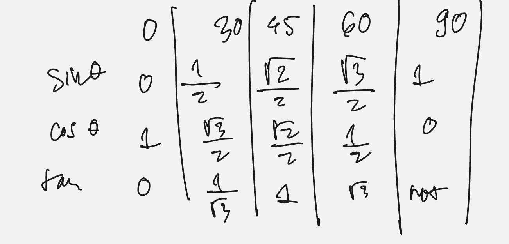

Screenshot-grounded prompt reconstruction. The frozen lesson screenshot shows only a handwritten exact-value table; the exact original ESAT question wording, marks and any answer options are not visible. Complete the standard exact-value table for $\sin\theta$, $\cos\theta$ and $\tan\theta$ at $\theta=0^\circ,30^\circ,45^\circ,60^\circ,90^\circ$, stating where a value is undefined.
[Marks not visible in the frozen screenshot]
Strategy and why. Build sine and cosine from the standard first-quadrant unit-circle pattern, then obtain tangent from $\tan\theta=\sin\theta/\cos\theta$. This is more reliable than memorising fifteen unrelated entries.
Derive rather than guess. On the unit circle, the point reached by turning through $\theta$ has coordinates $(\cos\theta,\sin\theta)$. This explains both the order and the size of the entries: cosine is the horizontal coordinate and sine is the vertical coordinate. At $0^\circ$ the point is $(1,0)$, while at $90^\circ$ it is $(0,1)$, so the endpoint values follow directly. For $45^\circ$, use an isosceles right triangle. If each short side is $1$, Pythagoras gives hypotenuse $\sqrt2$; scaling the hypotenuse to the unit-circle radius makes each short side $1/\sqrt2=\sqrt2/2$. Therefore sine and cosine are equal there.
The $30^\circ$ and $60^\circ$ values come from bisecting an equilateral triangle. Taking side length $2$ creates a right triangle with hypotenuse $2$, short side $1$, and remaining side $\sqrt{2^2-1^2}=\sqrt3$. Relative to the $30^\circ$ angle, opposite over hypotenuse gives $\sin30^\circ=1/2$, while adjacent over hypotenuse gives $\cos30^\circ=\sqrt3/2$. Viewing the same triangle from the complementary $60^\circ$ angle swaps opposite and adjacent, so the sine and cosine values swap. This triangle derivation is the recovery method to use if the memorised pattern goes blank.
Formula first. The derivations condense into a safe recall pattern. Across $0^\circ,30^\circ,45^\circ,60^\circ,90^\circ$, the sine numerators follow $\sqrt0,\sqrt1,\sqrt2,\sqrt3,\sqrt4$, all over $2$:
$$\sin\theta: 0,\ \frac12,\ \frac{\sqrt2}{2},\ \frac{\sqrt3}{2},\ 1.$$Cosine reverses the same list:
$$\cos\theta: 1,\ \frac{\sqrt3}{2},\ \frac{\sqrt2}{2},\ \frac12,\ 0.$$Now divide sine by cosine:
$$\tan0^\circ=0,\quad \tan30^\circ=\frac{1/2}{\sqrt3/2}=\frac1{\sqrt3}=\frac{\sqrt3}{3},$$ $$\tan45^\circ=1,\quad \tan60^\circ=\frac{\sqrt3/2}{1/2}=\sqrt3.$$At $90^\circ$, $\cos90^\circ=0$, so $\tan90^\circ=1/0$ is undefined, not zero and not infinity as a real value.
| $\theta$ | $0^\circ$ | $30^\circ$ | $45^\circ$ | $60^\circ$ | $90^\circ$ |
|---|---|---|---|---|---|
| $\sin\theta$ | $0$ | $1/2$ | $\sqrt2/2$ | $\sqrt3/2$ | $1$ |
| $\cos\theta$ | $1$ | $\sqrt3/2$ | $\sqrt2/2$ | $1/2$ | $0$ |
| $\tan\theta$ | $0$ | $1/\sqrt3$ | $1$ | $\sqrt3$ | undefined |
Sense check. In the first quadrant, sine rises from $0$ to $1$ while cosine falls from $1$ to $0$, so every displayed sine and cosine value must stay between those endpoints and remain positive. Complementary angles swap sine and cosine, which makes the $30^\circ$ and $60^\circ$ columns mirror; at $45^\circ$ they are equal, so tangent must be $1$. Tangent should increase as cosine shrinks, with no finite value at $90^\circ$. These structural checks catch a swapped root, an incorrect sign, or a falsely finite endpoint without relying on decimal approximations.
Recognition trigger and transfer. Rebuild the sine root pattern, reverse it for cosine, and derive tangent by division whenever exact angles appear inside a longer expression. In P1, this is often the key to simplifying an exact trigonometric expression, solving a basic trigonometric equation, or keeping a surd exact in non-calculator work. In P3, the same values appear after using identities, when evaluating exact limits or definite-integral endpoints, and when converting a transformed angle to a standard reference angle. First reduce the angle, then determine the quadrant sign, then insert the table magnitude. That sequence separates recall from sign reasoning and prevents a correct special-triangle value being attached to the wrong quadrant.
Frozen lesson screenshot.

ESAT use. These values often appear inside exact simplifications rather than as direct recall prompts. Keep $1/\sqrt3$ exact or rationalise it to $\sqrt3/3$ when required, and never replace an exact surd with a calculator decimal unless the question asks. Use complementary-angle symmetry as a rapid error check under time pressure.